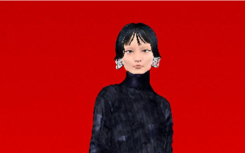

Как 3D помогало искусству во время пандемии?
Виртуальная галерея – это интерактивное трёхмерное пространство, где можно увидеть различные...
Digital Fashion
Digital fashion стал популярным благодаря усиленному вниманию к...

3D мемы
Мем-эволюция не стоит на месте: за десять лет интернет прошёл путь от демотиваторов и рейдж-комиксов к...